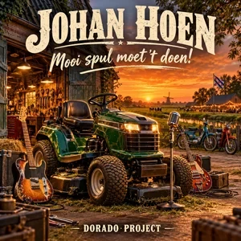

SINGLE · OP SPOTIFY
Johan Hoen, mooi spul moet 't doen!
Nederlandstalige rock / Reclamelied
Een uitbundig reclamelied voor Johan Hoen Tuin- en Parkmachines in Gorredijk. Dorado Project zet persoonlijke service, vakmanschap en tuin- en parkmachines in de schijnwerpers.
Luister op Spotify →